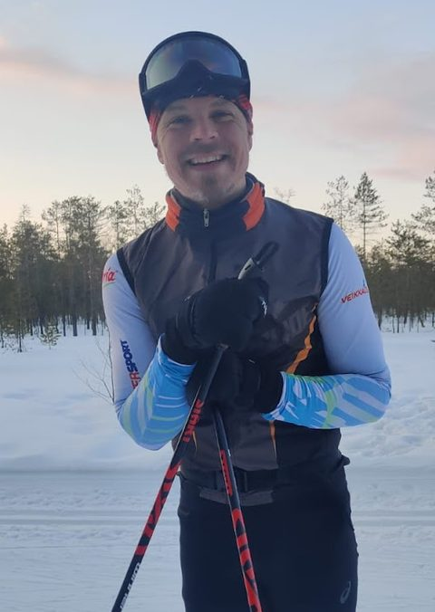

Yritys
Kaavoihin kangistumaton
Taustaa
Vuonna 2020 perustettu asiantuntijayritys
PlanDisain Oy on vuonna 2020 perustettu suomalainen yritys, joka tarjoaa maankäytön suunnitteluun liittyvää asiantuntijapalvelua koko Suomessa. Asiakkaita ovat kunnat, valtionhallinto sekä yksityiset toimijat.
Pienenä yrityksenä PlanDisainin etuna on kyky uudistua maailman ja lainsäädännön muuttuessa. Yritys kehittää jatkuvasti parempia menetelmiä, jotta asiakkaiden ja lainsäädännön tavoitteisiin päästään tarkoituksenmukaisella tavalla ja tehokkaasti.
Lähestymistapa
Olennaiset kysymykset esiin ja ratkaisuun
On tärkeää, että osalliset ja päättäjät pystyvät mahdollisimman hyvin ymmärtämään käsiteltävän kokonaisuuden.
Jokaisessa tehtävässä tunnistetaan ensin keskeiset kysymykset, nostetaan ne esiin ja työ keskitetään niiden ratkaisemiseen.
Pyrkimyksenä on uudistaa alaa siten, että prosessien avoimuus ja ymmärrettävyys korostuisivat nykyistä enemmän ja tällaista laatua pystyttäisiin kilpailutuksissa arvioimaan yksiselitteisemmin.
Vuorovaikutus
Vuorovaikutus on molemminpuolista
Vuorovaikutus asiakkaiden ja osallisten kanssa perustuu avoimuuteen sekä rakentavaan, asialliseen argumentaatioon. Erityisesti on tunnistettu sen molemminpuolisuus: tavoitteena on, että myös osalliset kokevat tulleensa ymmärretyiksi.
Edellytyksenä on kyky esittää asioita luotettavasti sekä ymmärrettävästi moniulotteisissa tilanteissa.
Yhteistyö
Kaavoitus on yhdessä tekemistä
PlanDisain toimii yhdessä muiden yritysten asiantuntijoiden kanssa muodostaen tarvittaessa laajemman työryhmän. Tavoitteena on toimia hyvien käytäntöjen edistämisen puolesta rakentaen kaavoja yhteistyöllä osallisten kanssa.
Lain hengen mukaisesti kaavoitus on lopulta yhdessä tekemistä ja yhteistyötä. Näiden yhteisten pelisääntöjen perimmäisenä tarkoituksena on luoda kaikille parempaa elinympäristöä.
Tavoite
Laadun ja selkeyden edelläkävijä
PlanDisain pyrkii olemaan kaavoituksen laadun ja selkeyden edelläkävijä — ei pelkästä kunnianhimosta, vaan siksi, että se on oikeudellisesti kestävää, osallisten kannalta reilua ja yhteiskunnallisesti vastuullista.
Kaikessa, mihin ryhdytään — kaavatyöstä maankäytön digitalisaatioon ja vuorovaikutuksen järjestämiseen — tavoitteena on tehdä se huolellisesti ja paremmin kuin se on tehty ennen.
Perustajalta

Perustin PlanDisain Oy:n vuonna 2020 luodakseni puitteet tehdä työtä parhaaksi kokemallani tavalla nyt ja tulevaisuudessa. Toimin asiantuntijana, ja vastaan työn laadusta sekä yrityksen kehittymisestä.
Vuosina 2004–2020 toimin Insinööritoimisto Paavo Ristola Oy:ssä (2007 alkaen Ramboll) kaavoittajana, projektipäällikkönä, laatuvastaavana ja johtavana asiantuntijana. Tarkemmin työkokemukseeni voi tutustua ansioluettelossani.
Työssä kehittyminen tarkoittaa minulle ymmärryksen ja taitojen syventämistä, jotta työ palvelee ihmisiä ja yhteiskuntaa kustannustehokkaasti ja olennaiseen keskittyen. Useiden rinnakkaisten lakikokonaisuuksien hallinta ja niiden tavoitteiden toteutuminen kaavaprosesseissa on työni ehdoton perusta.
Tarvittaessa kokoan laajemman työryhmän yhteistyökumppaneideni kanssa, ja toimin tarpeen mukaan myös osana muiden johtamia työryhmiä.
Näillä sivuilla olen pyrkinyt antamaan kokonaiskuvan yrityksen työstä ja tavasta toimia.
Antoisaa yhteistyötä toivottaen,
Markus Hytönen
toimitusjohtaja, PlanDisain Oy